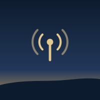

Listen live
Our live stream isn’t on the air yet. When it launches, you’ll be able to listen right here or from the player at the bottom of any page.

OfflineNow playing
Nothing on the air right now
No broadcast source is connected yet.
Up next
Schedule to be announced
Schedule
Episodes
Phase 6
Live broadcasting is being prepared
The player is built and ready. It goes live once a streaming provider is connected.
- Live audio through Icecast, SHOUTcast or a similar service
- Current program and host shown automatically
- Replays of past broadcasts